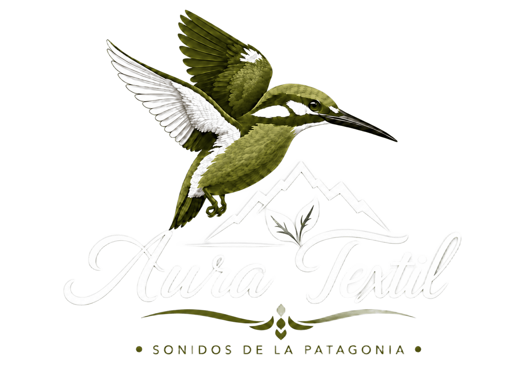

Vuelo majestuoso
Aprovecha las corrientes térmicas para elevarse y desplazarse.

ESCANEA. ESCUCHA. DESCUBRE.
Vultur gryphus
EL SEÑOR DE LOS ANDES
El cóndor andino es una de las aves voladoras más grandes del mundo y un símbolo de la cordillera de los Andes. Gracias a sus enormes alas, puede recorrer grandes distancias aprovechando las corrientes de aire sin realizar un esfuerzo constante.
Su presencia cumple una función esencial en la naturaleza, ya que se alimenta de animales muertos y contribuye a limpiar los ecosistemas. En la Patagonia puede observarse sobre montañas, acantilados y extensas zonas abiertas.
Aprovecha las corrientes térmicas para elevarse y desplazarse.
Sus alas pueden superar ampliamente los tres metros de extensión.
Al consumir carroña ayuda a mantener limpios los ecosistemas.
Es una especie longeva y alcanza lentamente la edad reproductiva.
CONSERVACIÓN
La pérdida de hábitat, la contaminación y el envenenamiento representan amenazas para esta especie. Su reproducción es lenta, por lo que la protección de sus zonas de alimentación, descanso y nidificación es fundamental para su conservación.
CRÉDITOS
NUESTRO PROPÓSITO
En Aura Textil creemos que cada fotografía cuenta una historia y que cada especie merece ser conocida, valorada y protegida.